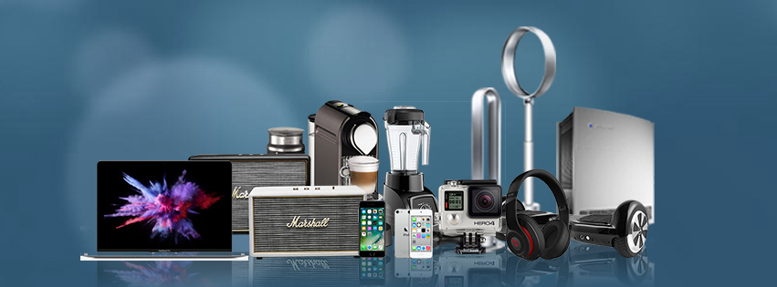
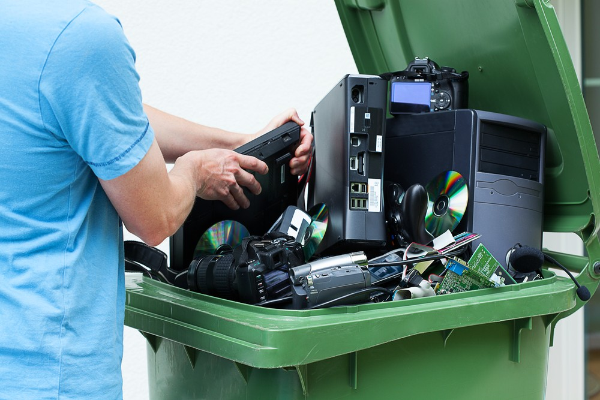
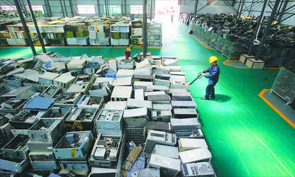
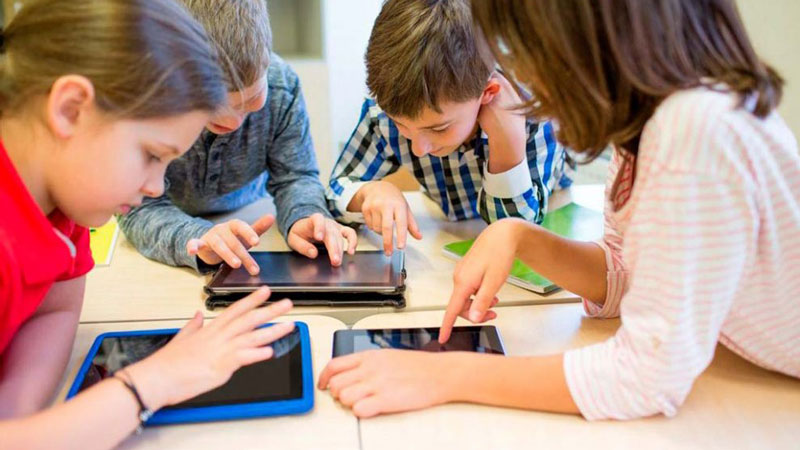
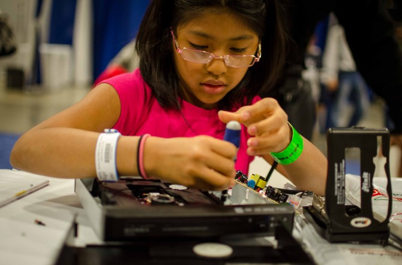

Lions Public School is one of our centers which helps us in collecting the
e-waste and maintaining our environment.
| E-waste, or electronic waste, is waste from all sorts of electronics ranging from computers and mobile phones, to household electronics such as food processors, pressure, cookers etc. The effects of improper disposal of this E-waste on the environment are little known; these impacts nonetheless pose very real threats and dangers to the global environment at large. Threats posed by E-waste to the environment. Improper disposal of these electronic wastes affect the soil, air, and water components of the environment. Effects on air One of the most common effect of E-waste on air is through air pollution. For example, a British documentary about Lagos and its inhabitants, called Welcome to Lagos, shows a number of landfill scavengers who go through numerous landfills in Lagos looking for improperly disposed electronics which includes wires, blenders, etc., to make some income from the recycling of these wastes. These men were shown to burn wires to get the copper (a very valuable commodity) in them by open air burning which can release hydrocarbons into the air. Effects on water When electronics containing heavy metals such as lead, barium, mercury, lithium (found in mobile phone and computer batteries), etc., are improperly disposed, these heavy metals leach through the soil to reach groundwater channels which eventually run to the surface as streams or small ponds of water. Apart from these chemicals resulting in the death of some of the plants and animals that exist in the water, intake of the contaminated water by humans and land animals results in lead poisoning. Some of these heavy metals are also carcinogenic. Effects on soil In this way, toxic heavy metals and chemicals from e-waste enter the “soil-crop-food pathway,” one of the most significant routes for heavy metals’ exposure to humans. These chemicals are not biodegradable—they persist in the environment for long periods of time, increasing the risk of exposure. |
| How many electronic gadgets does your family have? What’s your favorite electronic gadget? An iPad? Video game? TV? How many gadgets does your family use? Would you believe that the average home has 24 electronic products! Do you ever think about what happens to these gadgets when you are done with them? When you stop using them and are ready to dispose of these products, they are sometimes known as electronic waste, or “e-waste.” |  |
| Don’t trash them. First, we should never throw e-waste in the trash! Even the small stuff like phones or batteries shouldn’t go in the trash. There are some toxic (dangerous) chemicals in these products that don’t belong in the trash. It’s bad for our environment, plus it means throwing away valuable metals that can be recycled. Pass them on for reuse. Sometimes you have something that still works, but you don’t use it any more. But somebody else might use it. The best thing to do is to give it to someone else who can keep using it (only if your parents say it’s ok.) If you don’t find a family member or friend who wants it, you can often donate it to a charity in your community. Recycle them. If you can’t find someone who wants to use your old gadget, then you can recycle it. You probably already recycle newspapers or bottles or cans from your house. Electronics can be recycled, too. |  |
| There are companies that will take our old electronics, take them apart, and separate and recycle the materials inside – like plastic, glass, and metals. Many of these materials can then be used to make new products. Find a good e-waste recycler. When you recycle your old electronics, you should try to find a recycler called an e-Steward. E-Stewards are recyclers who meet the highest standards for how they recycle our stuff, including not just shipping it off to poor countries. It’s like they took the hardest test on recycling and they all got A’s. Check this map to see if there is an e-Steward recycler near you. Staples stores. If there is no e-Steward recycler near you, you can also take some electronics (but not TVs) back to any Staples store for recycling. Staples has a free recycling program that works with an e-Steward recycler. Click here to learn more about the Staples program. Best Buy stores. If you have some big stuff that Staples won’t take (like TVs), you can take them back to any Best Buy store. |  |
|  |  |
| Things kids can do to help recycle used electronics- Do a cell phone recycling drive and fundraiser in school. Lots of people have old cell phones that they no longer use, probably in a drawer somewhere. Ask your teacher if you can work on a project to have all the kids at school bring in the old cell phones that their parents don’t want any more. You can collect the phones (including the chargers) and send them to cell phone recycler called Capstone Wireless, who is an e-Steward. Some of the phones will have some trade in value, so Capstone will send some money back to the school. They also provide a prepaid shipping label for sending them the phones. Learn to fix broken gadgets yourself. Lots of our gadgets are easier to fix than you might think. And it’s fun to learn how to take them apart and make them work again. Xboxes and iPods are really good projects to start with. Does your Xbox have the “red ring of death” problem? You can fix it! You can learn how to fix things by using the guides from iFixit, which is a group that thinks it’s cool to fix stuff yourself, so they write free, easy-to-follow step-by-step repair guides and videos. Here’s their info on fixing iPods. Ask your teacher or a parent to help you set up a gadget repair project or club. |